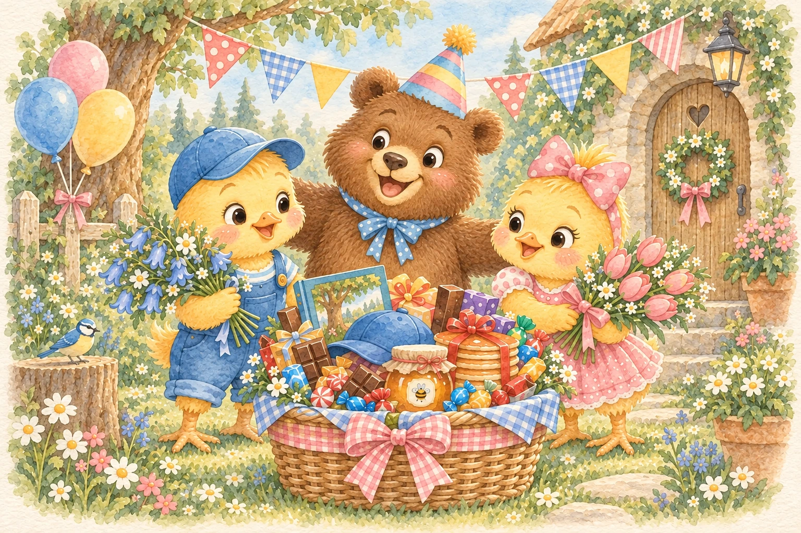
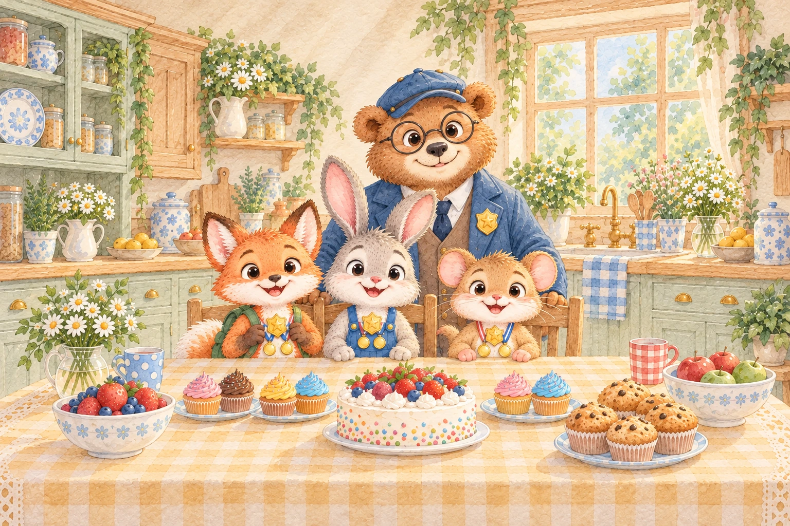
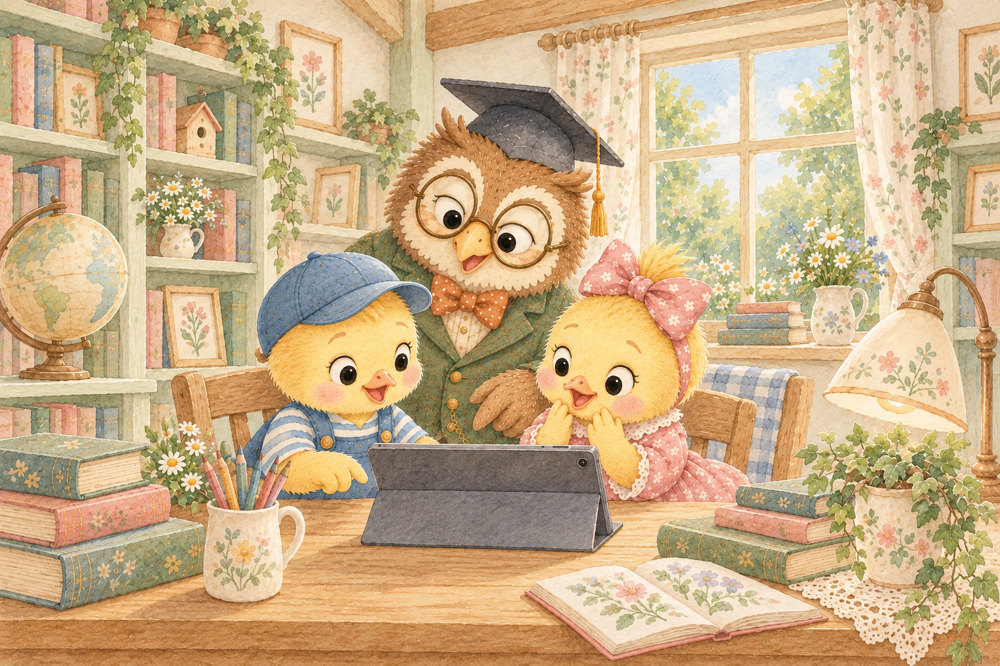

PEEP & POPPYEXPLORE & DISCOVER
Bruno’s Birthday
Adventure
Follow the forest trail, find hidden flowers and collect birthday treasures for Bruno.
6 forest levelsLet’s play

PEEP & POPPYEXPLORE & DISCOVER
Follow the forest trail, find hidden flowers and collect birthday treasures for Bruno.

TOBY, FINN & MILOLOOK & MATCH
Spot patterns in six cosy places, collect medals and earn your cyber detective badges.

PEEP & POPPYPEEP & POPPY — STOP • THINK • CHECK
Help Peep and Poppy examine messages and websites, spot the scam and learn how to stay safe online.
Playing on a phone? Turn it sideways when your adventure starts.